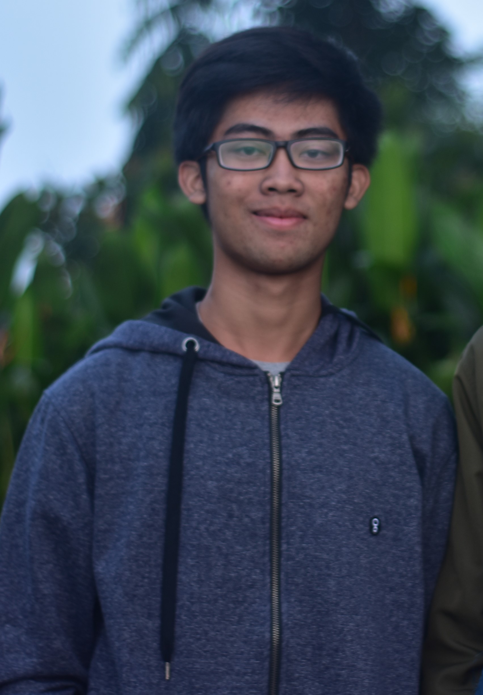

|  | |
| Nama Lengkap | Ridho Ajiraga Jagiswara |
| Tempat Tanggal Lahir | Sumbawa Besar, 23 Mei 2001 |
| Jenis Kelamin | Laki-laki |
| Tempat Tinggal | Sidoarjo, jawa Timur, Indonesia |
| Pekerjaan | Mahasiswa |
| Kewarganeraan | Indonesia |
| Hobi | Menonton film, Olahraga, Gaming, Trip |
| Informasi Umum |
| Tentang Saya | Hai, saya biasa dipanggil Ridho. Saat ini saya adalah seorang mahasiswa S1 Teknik Informatika di Institut Teknologi Sepuluh Nopember. Saya sangat tertarik dengan segala sesuatu yang berhubungan dengan teknologi. Saya juga memiliki kebiasaan yang berhubungan dengan seni dan fotografi. Dengan motivasi yang baik, saya berharap dapat terus belajar dan meningkatkan kemampuan pemrograman saya. |
| Nomor Telepon | +6287751403265 |
| ridhojagis@gmail.com | |
| @Ridhojrg | |
| Hobi | Menonton film, Olahraga, Gaming, Trip |
| Riwayat Jenjang Pendidikan Formal |
| Jenjang Pendidikan | Keterangan | Tahun |
| Sekolah Dasar | SD Negeri Kendangsari 1 Surabaya | 2007 - 2013 |
| Sekolah Menengah Pertama | SMP Negeri 39 Surabaya | 2013 - 2016 |
| Sekolah Menengah Atas | SMA Negeri 16 Surabaya | 2016 - 2019 |
| Perguruan Tinggi | S1 Informatika - Institut Teknologi Sepuluh Nopember | 2019 - sekarang |
| Pengalaman |
| Kepanitiaan | Organisasi | Kompetisi |
| Panitia Lomba 'Cara Paskibraka Adu Kreasi' (CARAKA) 2017 | Anggota Karya Ilmiah Remaja (KIR) SMAN 16 Surabaya | Juara 1 Fotografi ITS MABA CUP 2019 |
| Panitia Lomba 'Cara Paskibraka Adu Kreasi' (CARAKA) 2018 | Anggota UKAFO ITS |